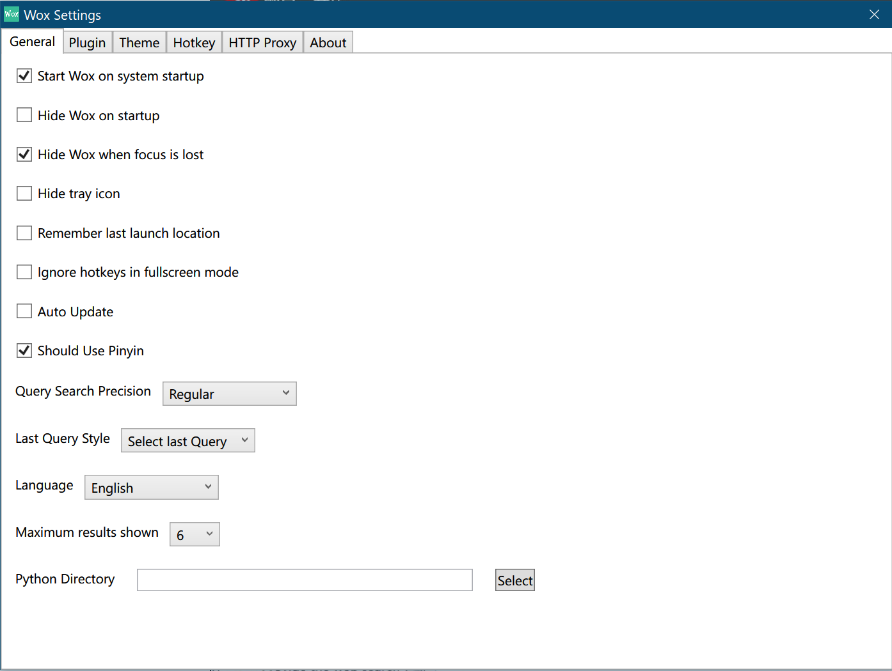

Settings
Wox Settings¶
General¶

Start Wox on system startup: Tick it if you want.Hide Wox on startup: If tick, after start Wox program, the query box will hide at first. If you want to openquery box, pressAlt+SpaceHide Wox when focus is lost: This means if you don't use Wox, the query box will hide.Default: TickHide tray icon: This will changeWindows Settings -> Taskbar -> Select which icons appear on the taskbar. If tick, Wox icon will disappear in taskbar(you can not found). (Which means the only way to open settings is (1))Remeber last launch location: BUG: Not clear yetIqnore hotkey in fullscreen mode: This will ignore hotkey if you enter the fullscreen mode. BUG: This doesn't seem to workAuto Update: BUG: This doesn't seem to work.Should Use Pinyin: This is special forChinese Query. For example,ydwill respond to有道oryoudao.Query Search Precision: BUG: Not clear yetLast Query Style: BUG: Not clear yetLanguage: Language support has : English, 中文, 中文（繁体）, Українська, Русский, Français, 日本語, Dutch, Polski, Dansk, Deutsch, 한국어, Srpski, Português (Brasil), Italiano, Norsk Bokmål, Slovenský.Maximum results shown: The max number of results(each result occupy one line) shows each time. If you want to see more,scroll it.Python Directory: The path topython.exe. If you have already set the environment variablePATH, there is no need to set it. Else, set path here.
Theme¶
Wox supports themes. You can choose your favorite theme or design your own theme.
Browse themes¶
Default: Dark, Recommend:
BlackAndWhiteorBlurBlack
Browse on web:
In addition, we also offer an online theme maker ThemeBuilder. Once theme is configured on the Web site, click on download, and rename it as following format: